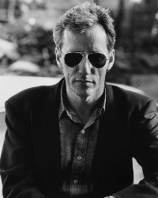
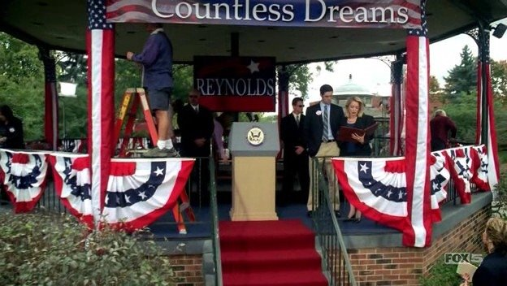
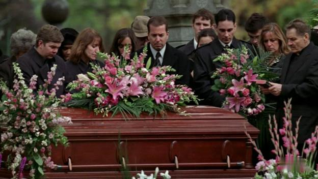
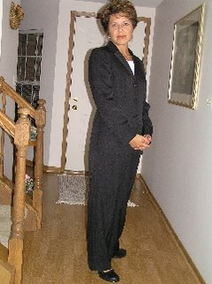

Lunch with James Woods
It was August 2003 in Las Vegas. While waiting to meet friends at the Bellagio, Carol, Mark and James were having lunch in the Olives restaurant. James had to leave for a prior engagement, but a wonderful time was had…
2 comments
First appearance on Prison Break
11/07/05, 27 minutes into episode 10 of Prison Break, Carol makes her debut appearance in her breakout performance as "Vice Presidential Aide". Carol is visible on screen in three shots in this scene. As the camera…
1 comment
The Unseen Mourner
In episode 12 of Prison Break, LJ sneaks out of the hospital to attend his mother's funeral. As the camera pans across the scene, a group of mourners is seen at the grave site. Unseen, off camera to the left, is Carol,…
The 'Almost' Appearance
In episode 8 of Prison Break, an explosion at Veronica's apartment nearly kills Veronica and Nick (Veronica's handyman, Lucasz, was not so lucky). As the secret service agents sit in their car outside the apartment and…

Welcome!
Welcome, to the first official Carol Townsend Fan Site! This is your first stop for all things relating to Carol Townsend's meteoric rise to stardom. Starting with Carol's monumental and groundbreaking appearance(s) on…
5 comments